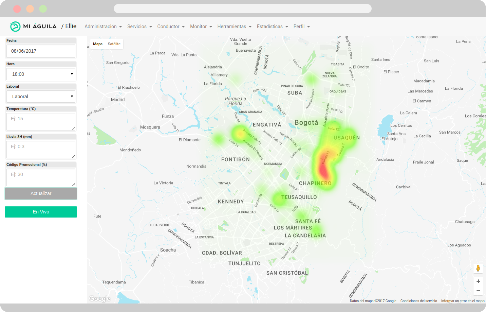

Predicting driver density in Bogotá
Sep 2017
Whilst working at a start-up in Colombia I was tasked with building a machine learning system to predict where drivers are needed across the city at any given time.
This involved re-engineering of historic data to aggregate densities of drivers per hour and location (a grid cell system of locations was created using a method based on geohashing). An XGBoost approach was used to build the model, and an API built to deploy it. One main function was to predict densities across the whole city for a heatmap display, built with Dart and used by the Operations team to visualise real-time and future predictions. Specific location suggestions for individual drivers could also be requested, using a matching algorithm developed to consider the driver's distance to high density locations along with the locations of other drivers in the city.